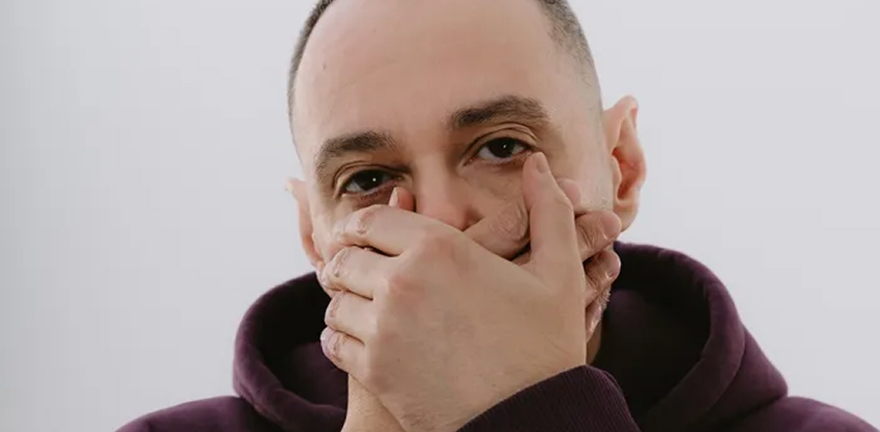
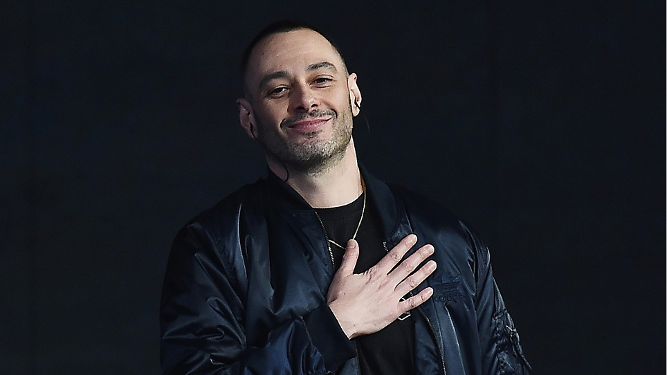

.png)
Fabri Fibra: “Ribellatevi ai finti ideali”
Fibra, questo è l’undicesimo disco.
Oggi tutti rappano. Sempre più gente rappa. Non è facile, ma quando lo impari, in realtà, l’aspetto più complesso è trovare argomenti che possano davvero riguardare le persone, la loro vita. Io ho passato varie fasi, compresa quella in cui volevo stupire i rapper. E più li stupivo e meno però parlavo alle persone. Quindi ho iniziato un lavoro, che non è mai finito ed è arrivato fino a questo undicesimo capitolo, per cercare di dire delle cose alla gente e allo stesso tempo risultare attuale con la formula del rap.
Che cosa cambia, crescendo, a livello di argomenti?
Andando avanti, in realtà, hai più cose da dire, perché per l’appunto cresci. Ma ovviamente, non essendo più un ragazzino, non puoi più dire cazzate. Che cosa mi è rimasto in mano quindi? Argomenti che affronto come se fossi in una conversazione tra coetanei. Non posso più fare solo la rima in cui dico “sono il migliore”, ma quella in cui dico “non sono il migliore perché ormai il mercato vuole solo le hit estive” sì.
In “Karma ok” rappi: “Le etichette si aspettano sempre la hit, il rap italiano fa schifo. Tutti in cerca del singolo estivo, pure io non prendiamoci in giro. Meglio questo che starmene in giro. O rinchiuso dentro qualche ufficio a fotocopiare dal vivo”.
Per me il dito puntato verso l’esterno non basta più. Il dito va puntato su se stessi. Posso dire certe cose anche perché mi sono tolto tante soddisfazioni e tanti pesi. Se fai una hit estiva e la azzecchi, secondo me puoi dire “che palle le hit estive”, al contrario oggi sembri un rosicone.
Nell’intro campioni “L’avvelenata” di Guccini, un’operazione simile a quella con “Il cielo in una stanza” di Paoli nell’intro di “Caos”. Il tuo, come fu quello del cantautore, è un j’accuse: “L’industria che è un supermercato, mettimi il prezzo”.
Faccio i conti con questa cosa perché posso farlo. Perché vengo dall’auto-produzione, dalle etichette indipendenti e sono poi arrivato in major, facendo tutto il percorso. La mia critica all’industria non è solo una critica all’etichetta, l’etichetta è solo una parte dello scenario.
Descriviamolo, allora questo scenario.
Prendiamo il pubblico, per esempio: la metà della gente che oggi ascolta rap lo ascolta perché gli rimbalza dal telefono. Quindi in tantissimi in realtà non sanno cosa tu, artista rap, stai realmente facendo. Si avvicinano al rap come ci si avvicina alla musica da classifica. Quindi il modo di relazionarsi con i rapper è deformato, è una lente che già in partenza modifica la radice di questo genere musicale.
Il mercato?
È un’altra parte dello scenario. In Italia non c’è più l’underground. Oggi puoi fare i dischi alla Curren$y in major, senza pensare al grande pubblico. Questo perché in Italia c’è solo la major, non esistono alternative. Quello che racconto è semplicemente quello che vediamo tutti i giorni: esiste un mercato musicale in cui l’unica cosa che conta è il risultato, la classifica. L’unico mezzo per diffondere la propria musica è Instagram. Non c’è critica di settore: tutti parlando di rap, fanno le reaction sui dischi, senza dire niente. Spesso riportano solo i numeri, “quanti dischi di Platino sono stati raggiunti” etc, e quella in realtà è la cosa che dovrebbe contare meno. Da qui la mia barra “l’industria è un supermercato”.
I rapper invece?
Molti rapper italiani per arrivare dove pensano si debba arrivare iniziano a cantare o mettono la cassa dritta. Insomma, non fanno più rap. Il rap qui non è tradizione, arriva da fuori, è importato, ma è l’unica vera rivoluzione avvenuta in Italia negli ultimi anni. Tant’è che quando l’abbiamo portato in major per la prima volta, ci hanno messo subito i bastoni tra le ruote. Oggi tutti dicono “il rap va, il rap funziona”: sì, ma è comunque accolto e trattato in modo diverso. Il rap è un errore di sistema.
Come in ogni tuo disco, anche in questo ci sono tante produzioni particolari, molte curate da Marz e Zef. Vuoi rappare sempre su qualche cosa di diverso?
Ho iniziato a fare questo disco due anni fa, a Santa Monica, con Pietrino (2nd Roof, ndr) con cui avevo lavorato al disco “Caos” per l’“Intro”, per “Cocaine” e altro, e ancora prima anche per “Fenomeno”. Siamo cresciuti ascoltando le stesse cose, tipo i Dogg Pound. Poi è arrivato Marz, che dopo il Marrageddon ha iniziato a mandarmi dei beat. Ho incominciato a fare decine di provini…io scrivo su tutto, su tutte le basi che mi mandano e mi interessano. Ma poi tengo solo alcune cose, quelle dove si crea una magia tra parole e sound. Io lavoro così. Neffa dice sempre: “Devi portare tutte le canzoni sulla cima della torre e decidere quale butti giù e quale tieni”.
Come si può elevare oggi il rap in Italia?
“Il rap si eleva valorizzando la musica e la componente testuale. Ma l’argomento che mi interessa di più è l’autenticità. Oggi in giro ci sono molti cosplayer. Va di moda vestirsi da rapper o da rocker, imitandone la forma, ma mettendo da parte la sostanza. Lo capisco, è un qualche cosa di generazionale, ma mi fa paura vedere ventenni imitatori di stili. Si travestono, non sono ribelli. Non essere ribelli da giovani è come essere mutilati. C’è il rischio che, a suon di copiare, ci si dimentichi davvero chi si è”.
Il titolo quando è arrivato?
“Alla fine. Ogni volta che tornavo a casa dallo studio vedevo le immagini di LA che bruciava. Ed è stato così per settimane. Io per chiudere i dischi aspetto sempre i messaggi divini. Ricordo che il titolo “Caos” arrivò perché una notte, tra le 2 e le 3 del mattino sulla Rai, stavo guardando un programma in cui degli scrittori sconosciuti presentavano i loro libri. Uno disse: “Scrivo per mettere ordine nel mio caos”. Cazzo, era la mia descrizione perfetta. Tra l’altro avevo già la traccia “Caos” chiusa. Qui era uguale: avevo le tracce chiuse, ma non avevo il titolo dell’album, che è arrivato vedendo quelle immagini.
Vai alla biografia dell’artista

Fabri Fibra